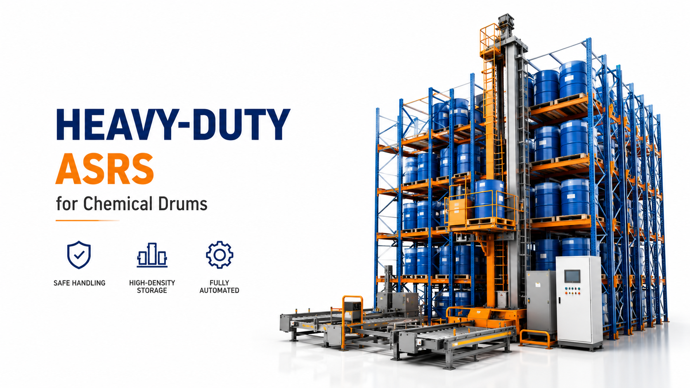

Heavy-Duty ASRS for Chemical Drums: How Stacker Cranes Handle Extreme Loads
Chemical drum storage is one of the most demanding warehouse applications due to high load weight, safety risks, and strict handling requirements. This project demonstrates a heavy-duty ASRS system using stacker crane technology designed specifically for chemical drum storage. The system ensures safe handling of extreme loads, high-density storage, and fully automated inbound & outbound operations, significantly reducing labor risk while improving operational stability.

Summary
Chemical drum storage is one of the most demanding warehouse applications due to high load weight, safety risks, and strict handling requirements.
This project demonstrates a heavy-duty ASRS system using stacker crane technology designed specifically for chemical drum storage.
The system ensures safe handling of extreme loads, high-density storage, and fully automated inbound & outbound operations, significantly reducing labor risk while improving operational stability.
Technology
- This heavy-duty ASRS system integrates:
- Industrial stacker crane ASRS system
- Reinforced pallet & drum handling racks
- Heavy-load conveyor transfer system
- WMS (Warehouse Management System)
- WCS (Warehouse Control System)
- Safety interlock control system
- Load weight detection sensors
- Anti-tilt and stability control modules
- Real-time SCADA monitoring system
- Hazardous material storage compliance framework
Challenge
Chemical drum storage environments present unique operational challenges:
Extremely heavy and unstable loads (chemical drums)
High safety risks during manual handling
Strict regulatory compliance requirements
Risk of leakage, tipping, or human injury
Inefficient manual forklift operations
Limited storage density due to safety spacing
Traditional manual warehouses are not suitable for safe and scalable chemical drum management.
Solution
A stacker crane-based heavy-duty ASRS system solves these challenges by fully automating material handling under controlled conditions.
Key advantages:
Eliminates manual handling of heavy chemical drums
Provides precise, controlled vertical and horizontal movement
Ensures stable load positioning during transport
Enables high-density automated storage
Reduces human exposure to hazardous materials
This transforms chemical storage into a fully controlled industrial automation system.
Workflow & Layout
The system operates through a structured automated workflow:
Step 1: Inbound Receiving
Chemical drums arrive at the warehouse and are:
Scanned and registered in WMS
Checked for safety compliance
Assigned storage location data
Step 2: Heavy Load Transfer
Drums are transferred to the ASRS input station using:
Reinforced conveyor systems
Heavy-duty lifting platforms
Step 3: Stacker Crane Storage Operation
The stacker crane performs:
Vertical lifting of heavy drum pallets
Precise aisle navigation
Automated storage into reinforced rack systems
Step 4: High-Density Storage Management
The system optimizes storage by:
Grouping by chemical type
Ensuring safety separation distances
Maximizing vertical space utilization
Step 5: Automated Retrieval
When required:
Stack crane retrieves designated pallets
Load stability is continuously monitored
System ensures safe transport conditions
Step 6: Outbound Dispatch
Drums are transferred to:
Packaging zones
Shipping docks
External logistics systems
Results & ROI
- Operational Performance:
- Stable heavy-load handling up to industrial-grade requirements
- Fully automated inbound & outbound flow
- 24/7 continuous operation capability
- Safety Improvements:
- Significant reduction in human exposure to hazardous chemicals
- Reduced forklift-related accidents
- Improved regulatory compliance
- Efficiency Gains:
- Higher storage density compared to manual warehouses
- Faster and more stable material flow
- Reduced downtime in handling operations
- Labor Reduction:
- 50–70% reduction in manual handling workforce
- Shift from physical labor to system supervision
Equipment List
- Core Hardware:
- Heavy-duty stacker crane system
- Reinforced chemical drum pallet racks
- Industrial conveyor transfer system
- Automated lifting platforms
- Safety isolation systems
- Control & Software Systems:
- WMS warehouse management system
- WCS control system
- SCADA real-time visualization platform
- Load monitoring and safety sensors
- Safety Systems:
- Anti-collision detection
- Load weight verification sensors
- Emergency stop system
- Chemical hazard zone isolation controls
Project Overview / Opening
This project is designed for one of the most challenging warehouse environments: chemical drum storage with heavy and hazardous materials.
Unlike standard ASRS systems, this solution focuses on:
Extreme load handling
High safety requirements
Precision movement control
Risk-free automation
The result is a fully automated heavy-duty storage system built for industrial safety and efficiency.
Key Points
- 1️⃣ Safe Handling of Heavy Loads
- Stacker cranes are engineered to:
- Carry heavy chemical drum pallets
- Maintain balance during vertical movement
- Ensure zero manual lifting risk
- 2️⃣ High-Density Storage
- The system maximizes warehouse space by:
- Using vertical rack structures
- Reducing aisle dependency
- Optimizing pallet positioning logic
- 3️⃣ Automated Inbound & Outbound
- All material movement is:
- Controlled by WMS/WCS
- Executed via stacker crane automation
- Fully synchronized with logistics flow
- 4️⃣ Reduced Labor Risk
- Automation eliminates:
- Manual forklift operations
- Direct human contact with hazardous materials
- Physical strain from heavy lifting
- 5️⃣ Industrial Safety Compliance
- The system supports:
- Chemical storage regulations
- Safety isolation requirements
- Continuous monitoring and alerts
Implementation / Workflow
Phase 1: Safety & Requirement Analysis (2–3 weeks)
Chemical classification review
Load weight assessment
Compliance planning
Phase 2: System Design (2–4 weeks)
Warehouse layout design
Stacker crane configuration
Safety zoning planning
Phase 3: Engineering Integration (4–8 weeks)
Hardware manufacturing
Control system integration
Software deployment (WMS/WCS/SCADA)
Phase 4: Installation (2–4 weeks)
Crane installation
Rack system assembly
System integration
Phase 5: Commissioning (1–2 weeks)
Load testing
Safety validation
Full operation launch
Customer Value / Results
Operational Value:
Fully automated chemical drum handling
Stable and reliable warehouse operations
Reduced human dependency
Safety Value:
Lower industrial accident risk
Improved hazardous material control
Regulatory compliance assurance
Financial Value:
Lower long-term labor cost
Reduced equipment damage risk
Improved operational efficiency
Conclusion / Next Step
Heavy-duty ASRS systems based on stacker crane technology are the safest and most efficient solution for chemical drum storage.
They provide:
✓ Safe handling of extreme loads
✓ High-density storage capability
✓ Fully automated inbound/outbound flow
✓ Significant reduction in labor risk
✓ Industrial-grade operational stability
If you are planning a chemical or heavy-load warehouse automation project, we can help design a safe, compliant, and high-efficiency ASRS system tailored to your operational requirements.
SEO Title
Heavy-Duty ASRS for Chemical Drums: How Stacker Cranes Handle Extreme Loads
SEO Description
Chemical drum storage is one of the most demanding warehouse applications due to high load weight, safety risks, and strict handling requirements.
This project demonstrates a heavy-duty ASRS system using stacker crane technology designed specifically for chemical drum storage.
The system ensures safe handling of extreme loads, high-density storage, and fully automated inbound & outbound operations, significantly reducing labor risk while improving operational stability.
Related Blog
Start with Your Business Challenge
Tell us about your warehouse, factory, or production requirements. We'll help you explore practical automation solutions and relevant project references.